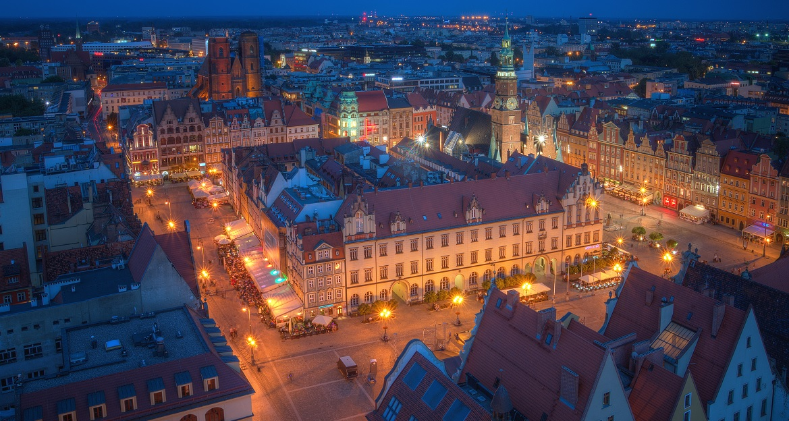

Wrocław
Wrocław
Wrocław i (łac. Vratislavia lub Wratislavia lub Budorgis, niem. Breslau i, dś. Brassel, cz. Vratislav, węg. Boroszló) – miasto na prawach powiatu w południowo-zachodniej Polsce, siedziba władz województwa dolnośląskiego i powiatu wrocławskiego. Położone w Europie Środkowej, na Nizinie Śląskiej, nad Odrą i czterema jej dopływami. Jest historyczną stolicą Dolnego Śląska, a także całego Śląska.
Jest głównym miastem aglomeracji wrocławskiej, a także największym miastem leżącym na Ziemiach Odzyskanych. Czwarte pod względem liczby ludności miasto w Polsce – oficjalnie 643 782 mieszkańców, piąte pod względem powierzchni – 292,82 km². Z wyliczeń MPWiK i policji wynika, że rzeczywista liczba ludności Wrocławia wynosi od 825 tysięcy do 1 miliona osób. Wrocław jest centrum rosnącej aglomeracji wrocławskiej, którą zamieszkuje szacunkowo 1,25 mln osób.
Miasto było stolicą księstwa wrocławskiego, siedzibą władz pruskiej prowincji Śląsk i rejencji wrocławskiej. Od 28 czerwca 1946 stolica województwa wrocławskiego. Od 1 stycznia 1999 stolica województwa dolnośląskiego, należy do Unii Metropolii Polskich i Eurocities.
W rankingu opublikowanym przez Globalization and World Cities Research Network, Wrocław został sklasyfikowany w IX kategorii (Gamma) miast o znaczeniu globalnym. Jest to drugi najlepszy wynik w Polsce (za Warszawą).
Wrocław został sklasyfikowany w pierwszej setce miast świata w rankingu firmy doradczej Mercer „Najlepsze miasta do życia” w 2015, 2016, 2017 i 2019, a także w pierwszej setce najbardziej inteligentnych miast na świecie (smart city) w raporcie IESE Cities in Motion Index w 2017 i 2019. W roku 2016 był Europejską Stolicą Kultury, od roku 2019 jest Miastem Literatury UNESCO, w lutym 2021 został sklasyfikowany na 1 miejscu należącego do Financial Times - fDi Magazine raporcie "Globalne Miasta Przyszłości 2021/2022" w kategorii średnich i małych miast świata.
